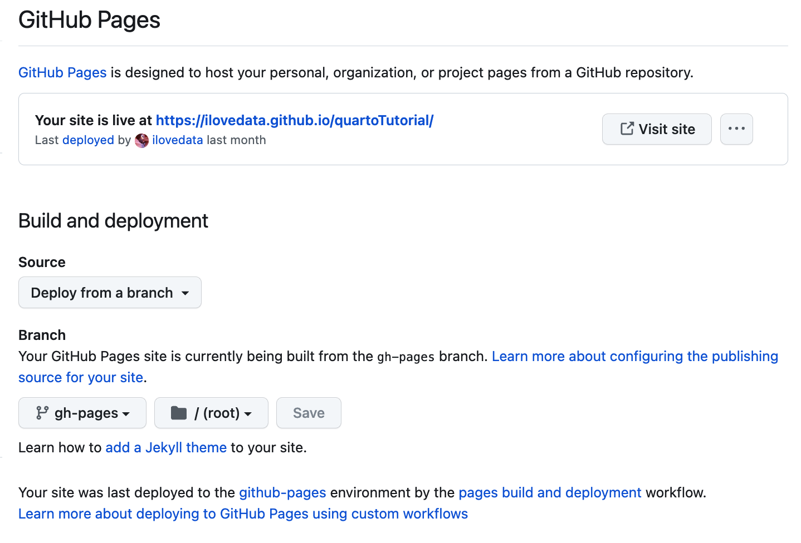

3 Quarto 의 출판 절차
3.1 사전 작업
먼저
Quarto를 설치한다. 설치는Quarto시작페이지를 참고하자.Rstudio또는Vscode를 이용하여 로컬 폴더에Quartobook 프로젝트를 생성한다.
- 참고로 Git 프로그램은 설치되어 있다고 가정하며 설치가 안됐으면 터미널에서 Git 를 사용할 수 있도록 설치한다.
Github 계정이 있다고 가정한다. Github 계정이 없다면 github.com에서 계정을 만든다.
로컬 저장소를 github 에 push 하는 경우 personal access token을 만들어서 password 에 입력해야 한다. 자세한 poersonal access token 생성 과정은 여기 를 참조하세요.
3.2 Git 의 로컬 및 원격 저장소 생성
Git 저장소를 구성하기 전에 Git 가 관리할 필요가 없는 화일들을 정하고 .gitignore 파일에 넣어 주어야 한다. 이 작업은 Git 초기화 작업 이전에 수행하는 것이 좋다.
자신의 프로젝트에서 사용할 언어에 맞게 .gitignore 화일을 먼저 구성하여 프로젝트 촐더에 미리 저장하는 것이 좋다. 다양한 언어에 대한 예제 .gitignore 화일들은 여기 에서 찾을 수 있다.
이제 git 환경을 구성하고 github 의 원격저장소에 올린다
터미널을 열고 프로젝트 화일들이 있는 폴더로 이동한다.
다음과 같은 명령으로
git저장소를 초기화한다.만약 Git 버전 2.28.0 또는 그 이상을 사용한다면:
git init -b main만약 Git 버전 2.27.1 또는 그 이하를 사용한다면:
git init && git symbolic-ref HEAD refs/heads/main다음에 다음과 같은 명령으로 저장소의 변경 내용을 추가하고 커밋한다.
git add . git commit -m "First commit"이제 Github 계정에서 원격 저장소를 만든다. 만드는 방법은 Github 안내서를 참조하여 만들면 된다. 이 경우
README화일은 만들지 않으며 로컹 저장소에서 만들어서 나중에 원격저장소에 올린다.Github에서 원격 저장소를 만든 후에 저장소의 주소를 복사한다.
터미날로 돌아가서 로컬 저장소가 있는 폴더에서 다음 명령을 입력한다.
git remote add origin <REMOTE_URL>프로젝트 폴더에서 커밋한 화일을 github의 원격 저장소에 push 하자.
git push -u origin main
이제 github의 원격 저장소에 가면 커밋한 화일들이 원격 저장소에 올려진 것을 확인할 수 있다.
위에서 설명한 내용들은 Github 안내서를 참조하였다.
참고로
github에 먼저 원격 저장소를 만들고 로컬 저장소에 클론(clone)하는 방법도 있다. 로컬에서 프로젝트 화일들을 어느 정도 만든 뒤에 원격 저장소에 올라는 것이 프로젝트를 일반적인 절차이므로 위의 방법을 제사하였다. 만약github에 먼저 원격 저장소를 만들고 로컬 저장소에 클론하려면 Github 안내서를 참조하면 된다.
Git 로 화일을 관리하는 도중에 관리할 필요가 없는 새로운 화일이 생겨서 .gitignore 파일에 넣어 주고 적용할 경우가 생긴다.
먼저 .gitignore 파일에 관리할 필요가 없는 화일들을 추가해 주고 다음 명령어를 실행한다.
git rm -r --cached .위의 명령이 실행되면 다시 화일들의 변경을 추가하고 커밋한다.
git add .
git commit -m "apply change in .gitignore"3.3 출판
Quarto 로 제작한 웹사이트나 책을 Github Page 에 웹사이트 형태로 출판하는 방법은 아래와 같이 3가지가 있다.
- 사이트를 로컬에서 만들고 원격 저장소에 옮기고 github 에서 출한하는 방법
quarto publish명령문을 사용하느 방법- Github Action 을 이용하는 방법
이 책에서는 quarto publish 와 github action 을 이용하는 방법에 대하여 설명한다.
다음의 설명하는 절차는 Quarto 설명서 를 참조하였다.
먼저 해야할 일
_quarto.yml의format: html:옵션에서embed-resources: false로 지정하는 것이 좋다.mainbranch 에서 모든 것을 commit 한다.build 의 결과를 저장하는 폴더를
.gitignore에 추가/.quarto/ /_site/
gh-pagesbranch 를 로컬 저장소에 만든다. 다음과 같은 명령어로gh-pagesbranch 를 만든다.git checkout --orphan gh-pages git reset --hard # make sure you've committed changes before running this! git commit --allow-empty -m "Initialising gh-pages branch" git push origin gh-pagesGithub 의 원격 저장소로 이동하여
Settongs->Page메뉴로 이동하여 다은 그림과 같이 Source 는 Deloy from a branch, Branch 는 gh-page 와 /(root) 로 지정되어 있는지 확인한다.

다시
main저장소로 돌아간다.git checkout mainQuarto의publish명령을 이용하여 사이트를 만든다quarto publish gh-pages- 주의 :
-quarto.yaml에 있는 모든 format 을 publish 하기 때문에 모든 format 이 오류없이 실행되게 하거나 html 만 실행하도록 만든다.
- 주의 :
이후에는 변경된 화일을 커밋하고 다시 publish 하면 됨
- 먼저 프로젝트
_quarto.yml에 다음과 같이 추가하여 로컬에서만 프로그램이 실행되도록 만든다.
execute:
freeze: auto- 다시 rendering 을 한다.
quarto render